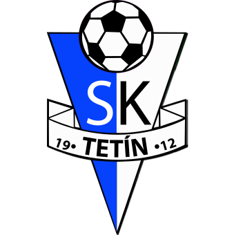

Kopu za SK Tetín
... podpořte sbírku na studnu
Dovolte nám představit koncept naší sbírky. Nacházíme se ve složitém období, máme obrovské potíže se suchem a nedostatečnou kapacitou obecního zdroje vody. Potřebujeme vrt na vodu pro celý náš areál.
{kind=link}
Sbírka na vrt
Dědictví, které nám předala předešlá generace v podobě našeho hřiště chceme nejen udržet, ale zároveň pozvednout a vylepšit tak, abychom se u nás všichni cítili co nejlépe. Cílem našeho snažení a vaší pomoci, je vytvořit pro nás všechny a zejména naše děti ideální podmínky pro sportování a trávení volného času.
Pojďte s námi „kopat za Tetín“ a předat dalším generacím poselství našich předků! Věřte, že i malá částka pomůže a posune nás o krok dál. Buďte si jistí, že vybrané peníze ze sbírky, využijeme účelně a s rozmyslem.
Klub SK Tetín
Tradice
Sport má na Tetíně dlouhou tradici. Již v roce 1909 zde byla jako v šesté obci na Berounsku založena Sokolská organizace a o tři roky později vzniká Čechoslovan Tetín.
Úspěchy
Za 100 let existence zažil fotbal na Tetíně mnoho slavných chvil. Patří mezi ně i slavné vítězství ve Šmídově memoriálu v roce 1941 či sezóna 1981/82 strávená v I.A třídě.
Kuriozity
V sezóně 1955/56 nastupovalo za Tetín hned šest hráčů s příjmením Novák. Všichni najednou nikdy nenastoupili, ale v každém zápase se v sestavě dva až čtyři objevili.
{kind=link}
{kind=link}
{kind=link}
{kind=link}
{kind=link}
{kind=link}
{kind=link}
{kind=link}
{kind=link}